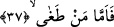
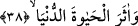

mutlak olarak ateş kasdedilmektedir. Bu ateşi “kim olursa olsun” görecek diye tefsir
ettik. Çünkü âyetteki “men/kim” kelimesi genellik ifâde etmektedir.
Rivâyet olunduğuna göre Cehennem açılır ve alev alev yanar. İster mümin ister kâfir
gözü olan herkes Cehennemi görür. Bu îzâha göre Cehennemi mümin de görecektir.
Oysa “Cehennem de azgınlara apaçık gösterilir” (Şuara 26/91) âyeti, bunun sâdece
azgınlara gösterileceğini ifâde buyurmaktadır. Bu iki anlam arasında herhangi bir çelişki
yoktur. Çünkü müminlerin Cehennemin yanından ve sırattan geçtikleri esnâda
Cehennemi görmeleri, Şuara sûresinde ifâde edilen “onu azgınların görmeleri”
gerçeğiyle çelişmez.
Bazı âlimlere göre bu âyetin mânâsı; “ve kâfire Cehennem açık bir şekilde
gösterildiği zaman” şeklindedir. Bu kimselere göre mümin “Allah Teâlâ’nın bizi tehdid
ettiği ateş nerededir?” diye soracak ve kendisine, “siz Cehennem ateşi henüz
tutuşturulmamış iken Cehenneme uğrayıp oradan geçtiniz” diye cevap verilecektir.
37. Azan kimseye
Bu cümle devamıyla birlikte “fe izâ câet…/en büyük belâ geldiği zaman” ifâdesinin
cevabı olup o en büyük belâ geldiği zaman ne olacağını haber vermektedir. Bu cümle
Bakara sûresindeki “Eğer benden size bir hidâyet gelir de her kim hidâyetime tabi
olursa onlar için herhangi bir korku yoktur ve onlar üzüntü çekmezler” (Bakara
2/38) âyetine benzer. Yine; “in ci’tenî fe in kadertu ahsentu ileyke/sen bana gelirsen ve
gücüm yeterse sana iyilik ederim” cümlesi de aynı şekildedir. Yine; “izâ kâneti’d-
da’vetu feemmâ men kâne câhilen fehunâke makamuhu ve emmâ men kâne âlimen
fehâhuna makamuhu/dâvet ve çağrı geldiğinde bu çağrıyı bilmeyen habersizler şuraya,
haber verilip gelenler şuraya otursunlar” cümlesi de aynen üzerinde durduğumuz âyetin
cümlesi gibidir. Bütün bu açıklamalardan sonra âyet-i kerimeye şöyle mânâ verilebilir:
“Böbürlenene, Allah’a itâatten yüz çevirene, meşhur Nadr ve babası el-Hâris gibi küfür
ve azgınlıkla azıp isyanda haddi aşana şüphesiz Cehennem tek barınaktır.”
38. Ve dünya hayatını âhirete tercih edene,
“Ve” uçup giden fani “dünya hayatını âhirete tercih edene” ve dünyada dünya
nimetlerinden yararlanmaya dalıp, îman ve itâatle ebedî âhiret hayatına hazırlanmayana
“şüphesiz” yukarda zikri geçen “Cehennem tek barınaktır” başkası değil.